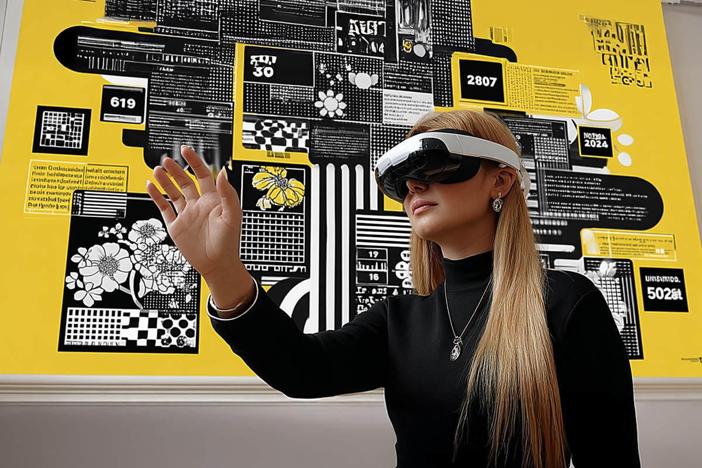

La reina de las automatizaciones
Aprender, probar, fallar y volver a intentar: así conquistó la IA y cambió la forma de trabajar de todo su equipo
Aprender, probar, fallar y volver a intentar: así conquistó la IA y cambió la forma de trabajar de todo su equipo

En el camino de la IA y el trabajo, hace tiempo que queremos mostrar cómo se ha transformado el trabajo en Compara. Lo repetimos mucho, pero vamos a seguir insistiendo en que la Inteligencia Artificial nos permite dejar de hacer trabajos manuales y repetitivos para lograr enfocar ese tiempo en lo que requiere de nuestro talento y creatividad.
Hoy vamos a entrevistar a Paula, una comparadora del área de Marketing, su puesto específicamente es Web Content Analyst, pero aquí veremos que es mucho más que eso.

Paula: Uso la IA principalmente para automatizar procesos y hacer más eficientes tareas que antes eran muy manuales, como la creación de correos, flujos o creación de contenidos. También la uso como herramienta de apoyo creativo y de análisis, por ejemplo, para generar ideas de mensajes, análisis de datos, revisar textos o estructurar información que me permita integrar todo de forma más clara. La IA me ha ayudado a ahorrar tiempo y enfocarme más en la parte estratégica que en la operativa.
Paula: Llevo trabajando con IA de forma activa desde principios de este año, aunque en los últimos meses el uso se volvió mucho más constante y profundo, he evolucionado mucho en la forma en que usaba la IA antes. Al principio eran pruebas pequeñas, tal vez pedirle a la IA ideas para generar contenido, pero ahora ya forma parte del flujo de trabajo diario para mí y el equipo, con agentes que son expertos en creación de contenido con prompts robustos que conocen de Compara y lo que necesita; o flujos automatizados para campañas de mail capaces de recibir feedback y dejarlos listos para ser enviados.
Paula: En parte fue un proceso muy práctico: probando, equivocándome y volviendo a intentar. Y en otra parte, lo complementé con capacitaciones, cursos y próximamente un diplomado, que me permiten seguir aprendiendo y evolucionando en el uso de la IA.
Empecé explorando herramientas por mi cuenta, analizando casos de uso y aplicando lo aprendido directamente en proyectos reales. Con el tiempo entendí que la clave no está solo en “usar” la IA, sino en aprender a conversar con ella, saber cómo guiarla y pedirle las cosas para obtener exactamente el resultado que necesitas.
Paula: Para nada. Al principio, mi puesto estaba muy enfocado en la automatización de procesos y web scraping, esto nos ayuda a optimizar tareas operativas y garantizar que la información en nuestros canales estuviera siempre actualizada. En ese momento, mi rol requería entender cómo automatizar flujos complejos, así que tuve que aprender desde cero, experimentar y desarrollar soluciones a medida, ¡y como ahora, fue un camino con muchos retos!
Gracias a ese conocimiento en automatizaciones, la llegada de la IA amplió aún más el alcance de mi trabajo. Pasé de automatizar tareas concretas a crear asistentes inteligentes que me ayudan en la gestión de mailing, contenido y análisis de datos. Ahora mi enfoque no es solo ejecutar, sino diseñar sistemas autónomos que facilitan el trabajo del equipo, que nos permitan concentrarnos en lo estratégico.
Paula: Fue algo que surgió de forma muy orgánica dentro del equipo. A medida que vimos cuánto tiempo consumían ciertas tareas, empezamos a buscar soluciones más inteligentes. Entonces, empecé a explorar herramientas que se ajustaran a lo que necesitábamos, empezamos a ver resultados, y eso motivó a que la IA se integrara más formalmente en los procesos.
Paula: ¡Totalmente! La IA es demasiado cambiante, así que siento que mi rol también está en constante evolución, y eso, entre otras cosas, es demasiado emocionante. Cada mes aparecen nuevas formas de aplicarla, y eso me obliga a mantenerme curiosa y flexible. Creo que más que un cambio puntual, estamos en un proceso continuo de transformación.
Paula: Me imagino un rol mucho más estratégico y creativo, con la IA cubriendo casi toda la parte operativa. Considero que en un año estaremos trabajando con flujos completamente integrados, asistentes más autónomos y decisiones impulsadas por datos y automatización.
Además (como un pequeño spoiler) tenemos planeado empezar a explorar temas de programación para aplicar mejor los conocimientos y potenciar lo que hacemos de la mano de la IA. Lo mejor de todo es que, contrario a algunas creencias, esto no reemplaza nuestro trabajo, sino que nos libera tiempo para pensar, crear y conectar más con el propósito de lo que hacemos.
La última línea de Paula nos cierra de una manera perfecta esta entrevista. Queremos seguir compartiendo estas experiencias para que todas las personas conozcan las aristas en las que se puede implementar la IA.
¿Utilizan la IA para automatizar procesos? Nos encanta saber como cada persona la está incorporando en su trabajo y en su vida cotidiana. Los leemos.
Hasta el próximo post.
 Actualidad
ActualidadEl recordado programa noventero “Venga Conmigo” marcó a toda una generación en Chile. Su exitoso segmento “Corazones Service” se transformó…
 Actualidad
ActualidadHace aproximadamente 2 meses comenzamos con el cierre de lo que empezó en julio como el “Compariniverse”.
 Actualidad
ActualidadHace unos meses lanzamos Compariniverse: la primera campaña en Chile protagonizada por una celebridad completamente clonada con IA.